About Tanzania
About Tanzania Coffee is the most popular beverage in the world, second only to water. It is especially beloved in North and South America, Europe, and Australia. However, none of these regions are the original birthplace of coffee. Let’s dive into the history of coffee to understand how and why this beverage became a favorite among people from various corners of the world.
In this article, you will learn:
- When were coffee berries first discovered to be consumable?
- Where did coffee trees originally grow?
- Who stole coffee to cultivate and sell it overseas?
- When did the first modern coffee houses appear?
- Who is currently the world leader in coffee production?
- Is coffee good for you, and how much can you drink without harming yourself?
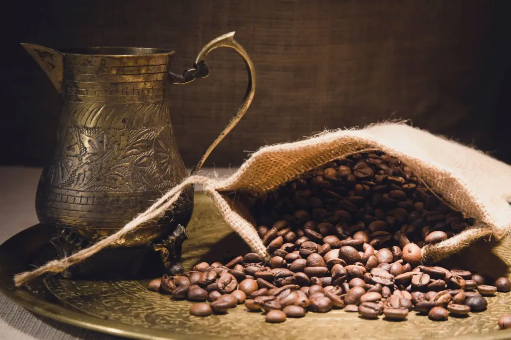
What is the origin of the word "coffee"?
Often, by examining words, we can understand the origins of things and phenomena. The main theory of the origin of the word "coffee" traces it through the Arabic language to the ancient kingdom of Kaffa, located in modern-day Ethiopia from the 14th to the 19th centuries.
There are three indisputable facts:
- The homeland of the Arabica coffee tree is in present-day Ethiopia;
- The Arabs were the first to learn to brew coffee after discovering the coffee tree’s berries in Ethiopia;
- The Arabic word for coffee is
Interestingly, this Arabic word initially referred to a type of wine before it was used for the newly discovered beverage. From Arabic, the word spread in slightly altered forms to all the other languages spoken by those who later enjoyed the tasty and invigorating Arab drink.
Wine and coffee share a few similarities, such as a significant taste parameter—acidity, and a stimulating effect. Both beverages enjoy worldwide popularity. Additionally, the expertise required in their tasting professions is similar; both sommeliers and undergo extensive training over many years to become experts capable of discerning the finest nuances in these beverages.
The origins of coffee history: Africa and the Arabs
Coffee as a drink was known before the 14th century. It is believed that humanity has been familiar with it for over 1,000 years. The residents of northeast Africa enjoyed the delicious drink for a long time. The first reliable records of coffee consumption, as we know it today, date back to the mid-15th century, from the territory of modern-day Yemen. Before this period, there were only fragmentary references to a beverage called "bunchum," which seems to have been made from whole, unroasted berries.
Who first invented coffee?
There is a legend about an Ethiopian shepherd named Kaldi who lived in the 9th century. According to the legend, his goats ate red berries and leaves from trees and then stayed awake all night. The shepherd tried the berries himself and felt a surge of energy. He then shared his discovery with monks from a local monastery, who were the first to use coffee berries to stay awake during long services.
The earliest mentions of a drink made from coffee tree berries date back to around 600 AD. It was made in Cairo and Mecca. This drink is mentioned in the works of the ancient Greek poet Homer and the Persian physicians Al-Razi and Avicenna. All of them refer to the drink as a remedy to combat drowsiness.
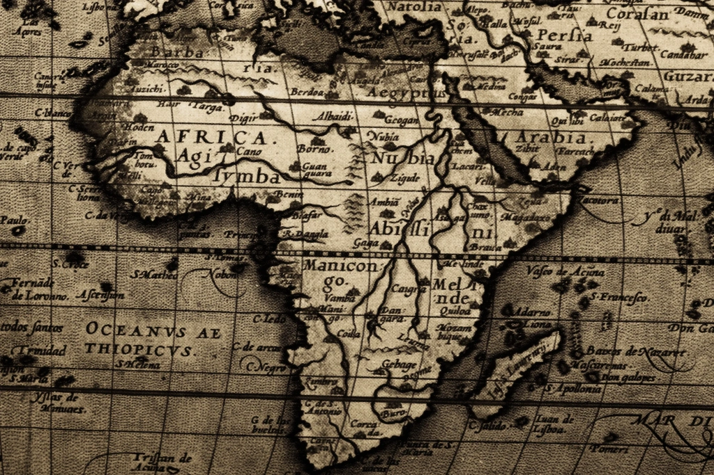
Around 1100, the Arabs first thought of grinding the berries and then boiling them to achieve a richer flavor. On the Arabian Peninsula, merchants began cultivating imported coffee trees. This practice wasn’t widespread at first, but by 1200, coffee had reached modern-day Turkey. Here, it was first roasted and brewed, being consumed along with the grounds. By the mid-14th century, the first coffee pots—handcrafted ceramic jugs—appeared.
Coffee became increasingly popular in Arab villages and cities. The first public coffee houses quickly started to appear. There, people enjoyed a drink similar to today’s coffee while talking, playing board games, listening to music, and discussing politics. At some point, Arab coffee houses became hubs of free thought, where discontented Persians, Syrians, and Turks drank coffee while voicing their grievances against the authorities. This period marked the first serious threat to coffee, as it might not have survived this era. Authorities closed coffee houses and banned coffee itself. Preparing the drink became a domestic activity, hidden from public view. Here again, coffee’s history parallels wine, which also faced bans that drove its production underground.
Coffee survived the period of bans and spread even more widely. Arab merchants then decided not only to grow coffee trees but also to sell roasted coffee to other countries. They smuggled coffee plants from Ethiopia to Yemen, establishing the world’s first coffee plantations. This occurred in the 14th–15th centuries, heralding the era of coffee’s penetration into Europe.
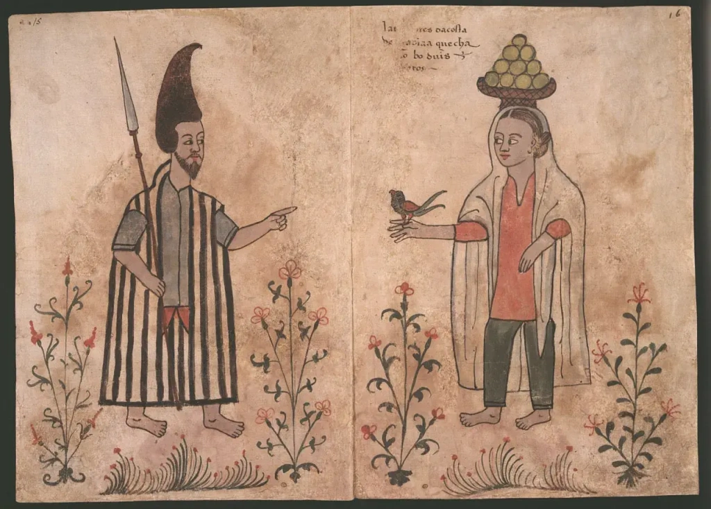
When did Europeans start to drink coffee?
Yemeni Arabs were cunning: after technically stealing the coffee plant from Africa, they prevented coffee seeds and seedlings from leaving Arabia. Only roasted beans were sold. The sale of green beans was prohibited. Sales from Yemen extended throughout the Middle East, including Turkey, Persia, Egypt, and further into North Africa.
By the end of the 16th century, more reports from travelers about the tasty Arab drink reached Europe. Interest in coffee led Europeans to seek out this beverage. Finally, in 1580, the first samples of coffee beans arrived in Europe. Italy was the first European country to experience coffee. From there, events unfolded rapidly.
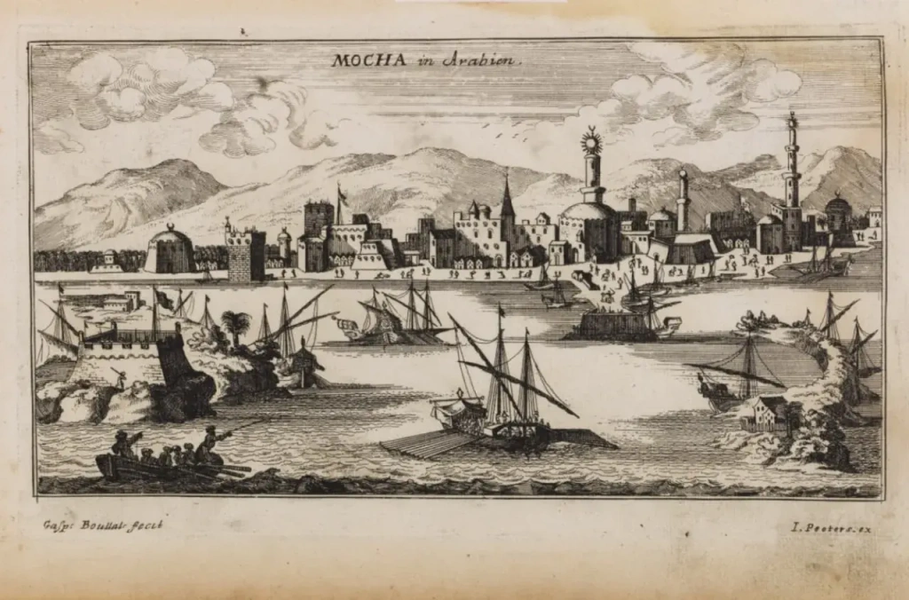
Venetian merchants bought coffee in the port, selling it at exorbitant prices to the wealthiest residents of the city. At the time, it was an incredibly expensive luxury. In Italy, coffee faced its second historical ban, being called the "devil’s drink" and an Eastern plague. However, the Pope, having tasted the delicious beverage, permitted its consumption. The Dutch East India Company began smuggling coffee into England. In 1637, the first coffee house outside the Middle East opened in England. Through the Dutch language, the word "coffee" (koffie) entered many of the world’s languages.
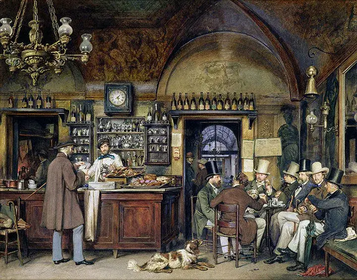
First coffee houses in Europe
In the 1640s, the first coffee houses appeared in mainland Europe. The very first opened in Venice. Coffee quickly spread throughout Europe: in Austria, France, Germany, and the Netherlands. Coffee houses opened in cities one after another, attracting aesthetes and intellectuals. Many of Europe’s old coffee houses, still operating today, proudly recall that they were frequented by Voltaire, George Sand, Benjamin Franklin, Thomas Jefferson, future Emperor Napoleon I Bonaparte, Johann Goethe, Felix Mendelssohn, Giacomo Casanova, and other famous figures.
Students frequented coffee houses, often learning more in intellectual discussions than in their university classes. From gentlemen’s coffee clubs and businesspeople in Europe and later in America grew many major organizations that significantly impacted world history and the economy. An example is the insurance market, founded in London during business meetings in a coffee house. In New York, the second floor of a coffee house became the site of what we now know as the New York Stock Exchange, the largest in the world.
Coffee in America and beyond
In the early 1660s, the Dutch brought the first coffee to North America—to their own settlement, New Amsterdam. Coffee quickly became popular there, and a few years later, when the city came under English control, it was renamed New York. Thus began the journey of coffee across America. New York coffee houses later became prototypes of taverns.
In 1665, coffee reached the royal court in Russia, marking its entry into the country during the 17th century. Drinking coffee was prescribed to the Russian Tsar Alexei Romanov by his doctor as a "fine remedy against bloating, colds, and headaches." Later, his son, Emperor Peter the Great, with his usual zeal, began to cultivate a coffee-drinking culture in Russia, having fallen in love with it in the Netherlands during his travels.
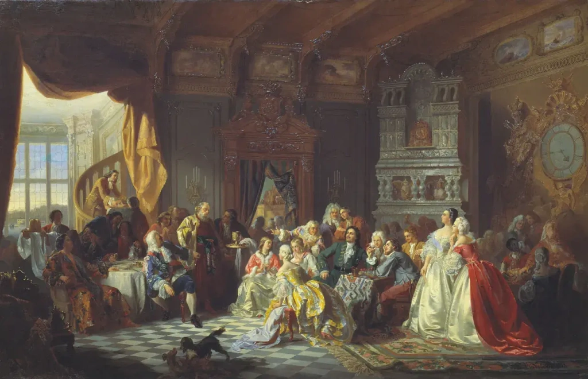
How did the Dutch help coffee spread?
As a maritime power, the Dutch facilitated the spread of coffee around the world. They controlled the islands of Java, Sumatra, and Ceylon (Sri Lanka), where the first coffee plantations outside the Arabian Peninsula were established. The first coffee trees on the distant mainland of Asia were grown in Dutch greenhouses on the coast of India. They also founded the first plantation in South America—in Suriname. The Dutch capital, Amsterdam, became the European center for coffee trade.
The mayor of Amsterdam gifted several coffee trees to the French King Louis XIV de Bourbon. He liked the taste of the coffee beverage so much that he ordered a plantation to be organized on the French island of Bourbon. It was there that the Bourbon variety, a mutation of the Typica variety, was bred, which is now the most widespread coffee variety in the world. Practically all other Arabica varieties (there are more than 500) originate from that very one, bred on the island in the first quarter of the 18th century. We discuss the types and varieties of coffee in the article on the best coffee in the world.
The Dutch continued to import coffee to South and Central America and to establish plantations there. The last was Brazil. Today, it is the main global supplier of coffee, far ahead of all other countries. Brazil supplies about a third of all the coffee that goes to the global market. Around the same time, the British founded plantations in the Blue Mountains of Jamaica, where one of the most expensive and beloved varieties—Blue Mountain—is grown today.
In 1732–1734, the renowned musician Johann Sebastian Bach composed his famous Coffee Cantata on the order of a coffee house owner where he spent much time. It was a response to yet another attempt, this time by the German authorities, to ban coffee, especially for women. The aria of the cantata states: "Ah! How sweet the taste of coffee! Lovelier than a thousand kisses, sweeter than muscatel wine!" Today, this ode to the drink is one of Bach's most frequently performed works.
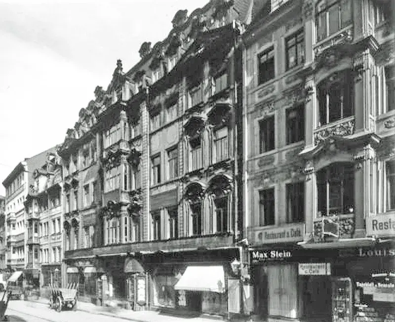
The Boston Tea Party
In 1773, America experienced the so-called Boston Tea Party—an act of protest by against the high tea tax imposed by the British government. Protesters in the port of Boston threw a cargo of tea from three loaded ships overboard. The harsh reaction of the British authorities further inflamed the dissent, which eventually led to the American Revolution. As we know, it resulted in the independence of the United States from the British Empire, the creation of the US Constitution, and the formation of democratic institutions with a division into three branches of power. There were also more global consequences for the whole world, but we are interested in the history of coffee. So, the result of the Boston Tea Party was the popularization of coffee in America, which was declared the drink of patriots.
Which country consumes the most coffee in the world?
Today, the US, along with Brazil, consumes more coffee than any other country. If we count not the total volume but the amount of coffee consumed per person, the Finns lead—with an average of 12 kilograms (26.4 lbs) of coffee per year per resident.
In the 19th century, Africa "helped" Brazil become the largest coffee producer, once again playing a role in the history of this beverage. From 1822 to 1888, vast areas of tropical forests were cleared for coffee plantations. Coffee began to be cultivated on an unprecedented scale. Slaves brought from Africa were the main labor force for clearing the forests and working on the plantations. This rapid growth in coffee production in Brazil, as well as in Java, flooded the markets with coffee beans, reducing the price of the once expensive commodity that was only available to the wealthy. From this point on, coffee began to be consumed even in poor families.
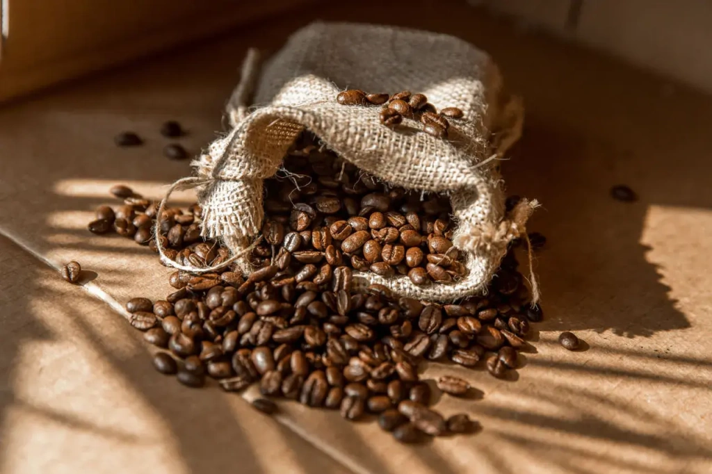
In the second half of the 19th century, roasted coffee packed in bags began to appear in grocery stores. It became unnecessary to visit coffee houses when you wanted a cup of coffee—you could brew it at home. The popularity of coffee is evidenced by the fact that steam coffee makers for home use began to appear in the 19th century. At that time, the first French presses for brewing coffee were also created, although the design was patented only in 1929. Today, the love for coffee and technological availability has led us to the point where many homes and offices have personal “mini-coffee shops”—coffee machines.
In the 1890s, coffee completed its round-the-world journey, returning to
where its centuries-long journey across the planet began. In 1893, coffee
trees were brought from Brazil to Kenya, bordering Ethiopia, to establish
plantations. In the same years, German colonial administrators began
importing coffee into . This was
the name of the territory of present-day Tanzania, Kenya's southern
neighbor. In 1898, Catholic missionaries first brought coffee to the foot of
Kilimanjaro.
We, the tour operator Angelino Adventures, live and work in Tanzania at the foot of
Mount Kilimanjaro. We know Tanzanian coffee as well as the local history of this
agricultural crop. If you plan to visit Tanzania, we will gladly organize a
tour of the best coffee plantation on the slopes of Kilimanjaro for you. But
for now, let's look at the more than century-old history of coffee in this
country. Since premium-quality beans are grown here, the national coffee
history is very interesting.
History of coffee in Tanzania
The official history of coffee in this country begins in 1898. But as early as the 16th century, the Haya people, living west of the great Lake Victoria, were growing Robusta coffee. It arrived here from the north, from Ethiopia. The Haya did not brew the familiar coffee beverage but something specific. They boiled whole berries, adding herbs. Then the resulting concoction was evaporated and smoked to obtain a mixture that could be chewed. That is how it was consumed. They called it amwani. This mixture, based on coffee fruits, was used during rituals, and only chiefs and their entourage could chew it. The coffee trees being grown were controlled by high-ranking members of society.
In the late 19th century, Arabica was introduced to Tanganyika. The first plantations appeared on the coast near Tanga and in the Usambara Mountains. Then, with the development of railways, coffee got closer to Mount Kilimanjaro. And in 1911, there was even an order to plant coffee seedlings in every region. From this moment, Tanzanian, or rather Tanganyikan, coffee began to reach Europe, promoting East Africa as a suitable region for coffee cultivation. All this was organized by the colonial administration of the German Empire.
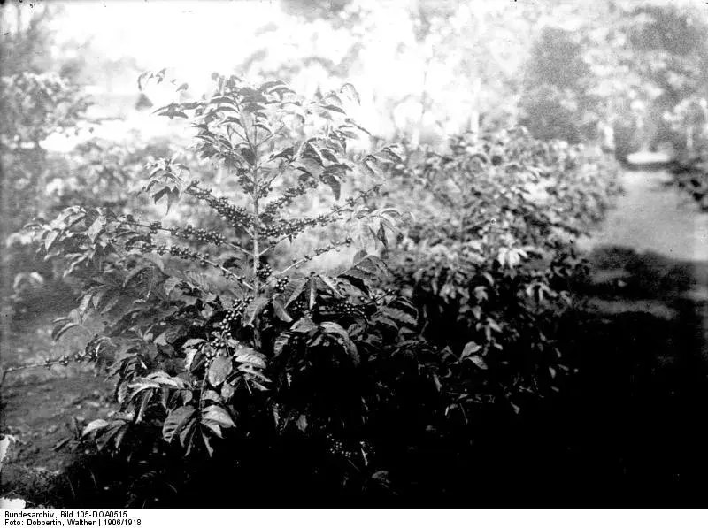
After World War I, Tanganyika came under British control, which continued to develop the local coffee industry. By 1925, the British had planted more than 10 million coffee seedlings here. In 1930, the British administration established the Kilimanjaro Native Cooperative Union (KNCU), uniting farmers. It still operates successfully today, although in 1961, Tanganyika ceased to be a British protectorate, gaining independence and later becoming Tanzania.
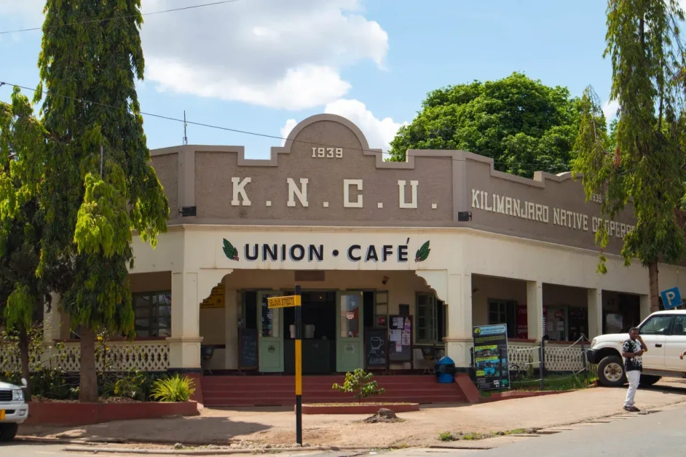
The independent government of Tanzania paid special attention to the coffee industry, expanding plantation areas and organizing not only the process of selling finished beans but also initiating research. The Tanzania Coffee Research Institute (TaCRI) operates in the country. Other organizations also work in the interests of Tanzanian producers. From 300,000 to 400,000 small households are involved in the coffee production industry, making it an important social and economic part of the country's life, providing jobs for about 2.5 million people.
Speaking of , Ethiopia, Kenya, and Uganda are among the leaders. There are other notable players in the African coffee market as well. All of them also grow premium products that are highly valued worldwide.
Which region produces the most coffee in the world?
For comparison, here are the coffee production for the 2021/2022 season by region:
- South America produced the most, with 77.5 million of coffee.
- Asia, including Oceania, supplied 51.4 million bags.
- Africa produced 19.27 million bags.
- Central America and Mexico together produced 19 million bags.
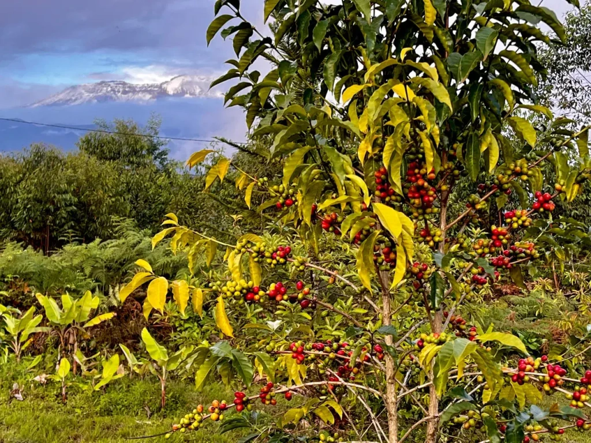
Innovations in coffee-making
Now let's return to the latter half of the 19th century and learn what else important happened in the world of coffee. At the turn of the 19th and 20th centuries, instant coffee was invented — a dry extract from coffee beans. The beans are roasted, ground, and processed with hot water. Then they are dried using spray-drying or freeze-drying methods. In the first case, a powder is obtained, and in the second — crushed fragments.
In the early 20th century, a method was invented to remove caffeine from coffee while preserving its taste. Thus, decaf coffee appeared, a coffee drink safe for people who, for medical reasons, cannot consume caffeine, which affects blood pressure.
Throughout the 20th century, coffee production and popularity grew. Industrial capabilities allowed constant updates in coffee technology: roasting machines for beans, coffee machines for creating various drinks. Chain coffee shops opened, the largest of which became Starbucks, now having more than 35,000 branded stores worldwide. New drink recipes were developed, and today there are more than 30 of them. By 1995, coffee had become the most popular drink in the world — more than 400 billion cups of coffee were consumed annually. All these trends continue to this day.
These are the main milestones in the history of coffee. When you trace all the twists and turns in the fate of our familiar drink, you realize that Arabs, Turks, and Brazilians are latecomers in the world of coffee. They have greatly contributed to coffee culture. Nevertheless, the coffee plant originates in Africa.
Lastly, we will answer frequently asked questions about coffee: whether it is harmful or beneficial, recommended doses by researchers, and how this drink affects the human body. We hope you have a good coffee on hand right now. Brew it and read all the answers, taking a sip after sip.
Popular questions about coffee
How much coffee can you drink per day?
The recommended dosage by specialists from the FDA is up to 400 mg of caffeine per day. This is approximately equal to 4 cups of 250 ml (8.5 fl oz). Moreover, a single dose should not exceed 200 mg, that is, two cups. This recommendation is for a healthy adult. The reaction varies individually, depending on metabolism and sensitivity to caffeine. Toxic effects in the form of seizures are observed after consuming 1200 mg of caffeine in a short time.
What are the benefits of coffee?
Nutrition experts from Johns
Hopkins University School of Medicine list 9 reasons why moderate
coffee consumption can be beneficial:
- Lower risk of developing type 2 diabetes
- Prevention of heart failure
- Reduced risk of Parkinson's disease
- Maintenance of healthy liver enzyme levels
- For women, lower risk of colorectal cancer
- Protection against the development of Alzheimer's disease in women
- Reduced risk of stroke among women
- Lower mortality from coronary heart disease, stroke, diabetes, and kidney disease — data for women
- Dark roast coffee reduces DNA strand breaks, which can lead to cancer or tumors.
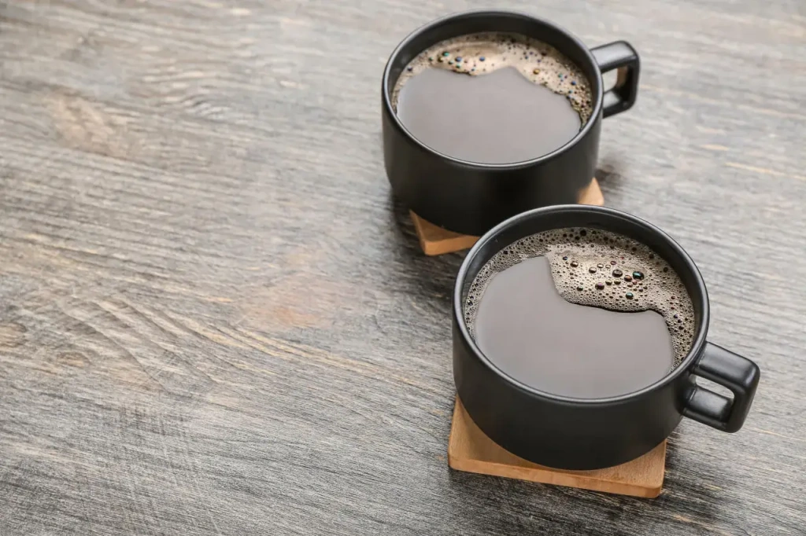
Does coffee raise or lower blood pressure?
In most cases, coffee drinks can temporarily raise blood pressure for 10–15 minutes. This effect is more common in people with low blood pressure. Blood pressure almost does not change in those with normal pressure. In 15% of cases, an espresso coffee drink lowered blood pressure in subjects in one experiment. The effect of coffee consumption depends on overall health and individual characteristics. With constant coffee consumption, tolerance develops, and blood pressure changes do not occur.
At what age can you start drinking coffee?
Drinking coffee is not recommended for those under 12–14 years old. For teenagers aged 14–18, the weekly norm should not exceed 200 mg of caffeine (approximately 2 cups of coffee). Experts recommend adding milk or cream. The American Academy of Pediatrics does not recommend children and teenagers drink coffee and other caffeine-containing products.
How much caffeine is in coffee (in one cup)?
One cup contains approximately 100 mg of caffeine. The exact amount depends
on the cup's volume, the type and characteristics of the specific coffee,
and the type of drink. Here are approximate values for popular drinks:
- Latte (400 ml/13.5 fl oz) — 200–360 mg
- Espresso (70–80 ml/2.4–2.7 fl oz) — 120–200 mg
- Cappuccino (200 ml/6.8 fl oz) — 100–136 mg
- Americano (120 ml/4 fl oz) — 85–120 mg
- Turkish coffee (200 ml/6.8 fl oz) — 76–130 mg
- Instant coffee (200 ml/6.8 fl oz) — 62–96 mg
How many calories are in coffee?
A regular cup of plain coffee without additives contains approximately two calories. The calorie content varies greatly depending on the drink and the additives.
Why do you feel sleepy after drinking coffee?
In some cases, people drink a lot of coffee to perk up but feel the opposite effect — drowsiness. This is because, after the short-term effect of caffeine on the body — blocking adenosine — its action wears off, and the accumulated adenosine drastically reduces alertness, prompting rest. Also, excessive coffee consumption brings the body to a peak of productivity, but immediately afterward, the nervous system demands compensation in the form of slee
Why does coffee have a laxative effect?
For many people, drinking a cup of coffee can prompt a quick visit to the restroom. This occurs in about 30% of the global population and is considered a normal physiological response. The primary reason for this is the hormone gastrin, which is released in response to coffee consumption. Gastrin causes the muscles of the large intestine to contract vigorously, often leading to bowel movements within just four minutes of drinking coffee. This effect is observed regardless of the coffee's caffeine content. Additional factors that may contribute include the drink's acidity, any dairy products added, or simply its warmth. Moreover, for some individuals, coffee acts as both a laxative and a diuretic, the latter effect being due to its caffeine content.
Can pregnant women drink coffee?
The general recommendation is no more than one cup of coffee per day. However, the reaction to coffee is individual. The final decision should be made with the help of a doctor. Can a large amount of caffeine harm the fetus or the mother? Yes, it can, but scientists do not have exact data. At this stage, all work in this direction is observational.
Instant coffee: benefits and harms
The composition of freeze-dried coffee is identical to its grain counterpart, not differing in its positive and negative effects on the human body. There is no reason to speak of any special harm or benefit of instant coffee.
What is the best coffee?
All connoisseurs and professionals answer this question the same way: the best coffee for a particular person is the one they like the most. As you can see, the answer to this question is highly individual. But how do you know which coffee you like? To do this, you need to try different drinks, varieties, and brands, the results of various processing and roasting methods. Look for coffee shops with high ratings, try various drinks, and listen to your sensations. To help you with theory, we have compiled a list of the best Arabica varieties. We tried to be objective, although any top coffee varieties list will always be incomplete. Don't be afraid to try new things and compare. This is the only way you can find the answer to the question of which coffee is the best for you.
The truth about kopi luwak — the most expensive coffee in the world
Kopi luwak is considered the most expensive coffee in the world, but not
because of its properties, but due to marketing tricks. It is obtained in an
exotic way: animals called musangs (Malay palm civets, luwaks in the local
language) eat coffee berries, after which undigested beans are found in
their excrement. These are collected, washed, and dried. It is claimed that
during the process of passing through the animal's digestive system, the
beans are enriched with various substances, resulting in coffee with
superior taste and aroma. However, not all cup testers agree, and many
consider kopi luwak to taste poor.
This coffee was popularized by advertisements from producers, Oprah
Winfrey's show, and the movie "The Bucket List," where Morgan Freeman's and
Jack Nicholson's characters talk touchingly about kopi luwak.
The argument in favor of kopi luwak is that civets select the ripest coffee
cherries. The high price is explained by the scarcity of such beans, the
difficulty in finding them, and the time-consuming process of searching for
beans in civet excrement. Perhaps this was once true. However, in recent
years, the situation has completely changed.
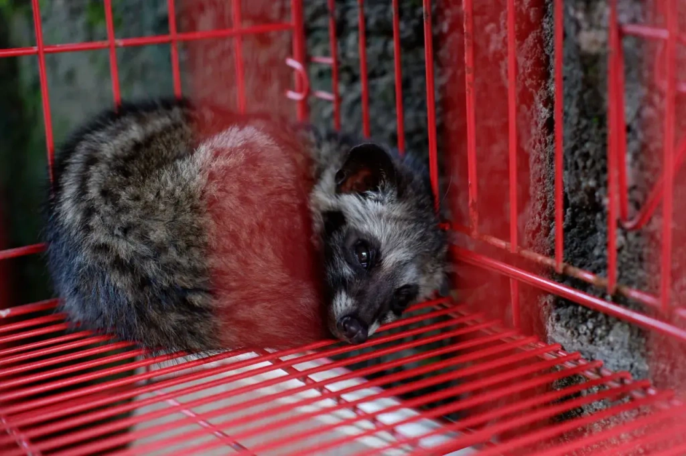
In Indonesia, Vietnam, the Philippines, India, and other countries, kopi luwak is produced on an industrial scale. On farms in unsanitary conditions, tens of thousands of civets are kept in cages and force-fed coffee cherries. They are starved to ensure they do not refuse the only available food — coffee berries. The quality of the berries is not controlled. Coffee beans collected from the cages are not examined for composition. Packaging falsely states "Collected in the Wild." Animals in cages are constantly under stress, as evidenced by bloody excrement and early deaths.
We detail the situation with the production of this brand in our article about kopi luwak coffee. We strongly recommend never buying kopi luwak coffee and not supporting an industry based on animal cruelty for profit. Instead, read our articles about African animals.
All content on Angelino Adventures is created with expert insights and thorough research, in line with our Editorial Policy.


Want to know more about Tanzania adventures?
Get in touch with our team! We've explored all the top destinations across Tanzania. Our Kilimanjaro-based adventure consultants are ready to share tips and help you plan your unforgettable journey.
 Tanzania Safaris
Tanzania Safaris
 Kilimanjaro and other mountains
Kilimanjaro and other mountains
 About Angelino Adventures
About Angelino Adventures
 About Tanzania
About Tanzania